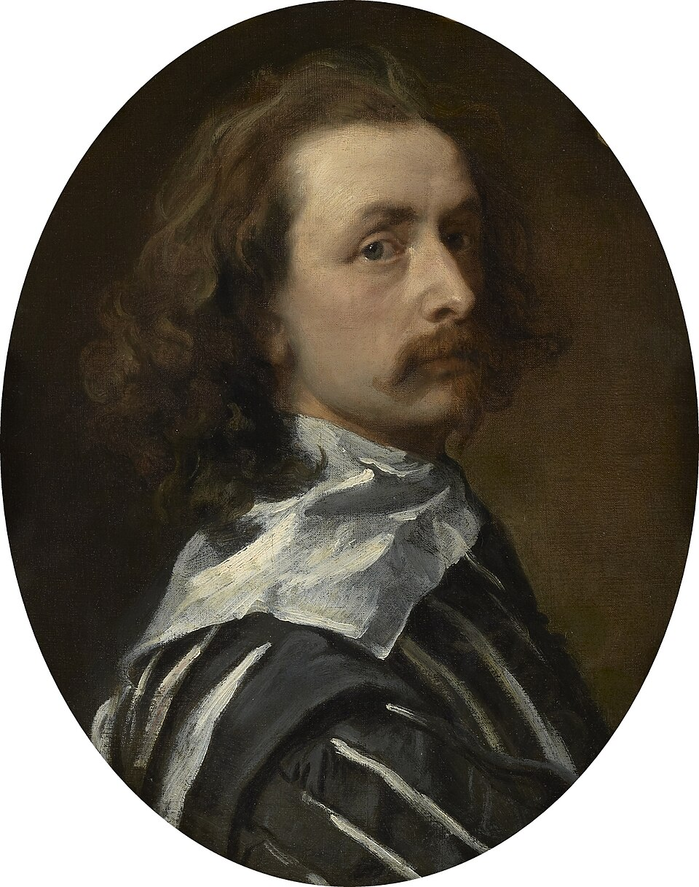

Pintor flamenco
Antoon van Dyck
1599–1641
Antoon van Dyck nació en Amberes en 1599 y murió en Londres en 1641 1. A los diez años entró en el taller de Hendrick van Balen y hacia los diecisiete ya trabajaba por su cuenta 12. Hacia 1618, año en que ingresó como maestro en la guilda de San Lucas, colaboró brevemente con Rubens 1. Tras una corta estancia en Londres (1621) pasó a Italia hasta 1627 y fue el retratista de la aristocracia genovesa 12. En 1632 se instaló en Londres como pintor de corte de Carlos I 12. Sus retratos del rey y su familia fijaron una nueva norma para el retrato inglés 2 y ejercieron un influjo determinante sobre la retratística británica del siglo XVIII 1.